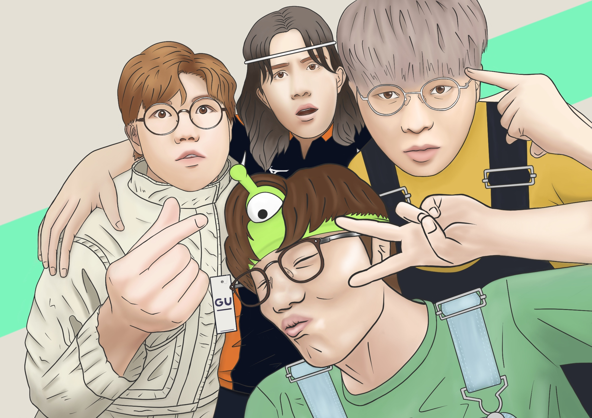

This is a postcards drawing i've done for Hong Kong's YouTubers JFFT (Just for Fun Team), as a souvenirfor there 8th anniversary show, I've designed a set of postcards 'Normal', 'Christmas', 'Chinese New Year', and a theme inspired by their show - captures a unique facet of jfft's journey. These postcards are tokens of appreciation, celebrating 8 years of laughter, camaraderie, and entertainment